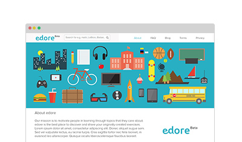

Edore
Edore is a community to showcase and discover creative exercises for better learning.

-
View Project →
abc In today's tutorial we'll be creating a simple responsive accordion that, when opened, will slide to the top of the viewport and reveal the content by fading it in. The idea is to avoid that the user has to scroll the content area into place. We'll also add some nice CSS3 transitions for the arrow to appear and to rotate when we click on an item. The accordion will be flexible, meaning that it will have a liquid width adjusting to the screen size.
Rosewood Hotel Group
Edore is a community to showcase and discover creative exercises for better learning.

-
View Project →
abc In today's tutorial we'll be creating a simple responsive accordion that, when opened, will slide to the top of the viewport and reveal the content by fading it in. The idea is to avoid that the user has to scroll the content area into place. We'll also add some nice CSS3 transitions for the arrow to appear and to rotate when we click on an item. The accordion will be flexible, meaning that it will have a liquid width adjusting to the screen size.